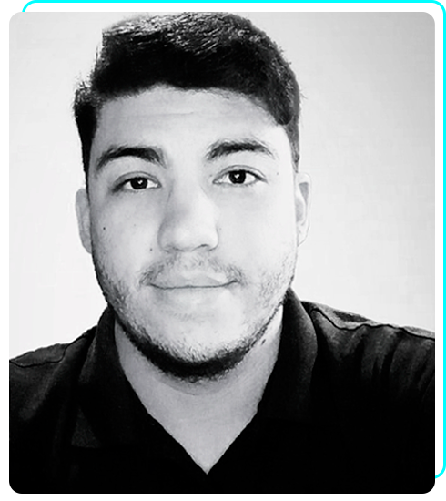

Sobre mim
Analista de Sistemas formado pela UNIP, com experiência em suporte técnico e desenvolvimento de software. Apaixonado por resolver problemas complexos e criar soluções eficientes através da tecnologia. Com inglês intermediário em evolução constantes, busco integrar conhecimentos técnicos e linguísticos para atuar em ambientes globais.
